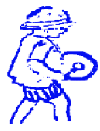
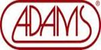
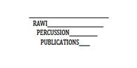
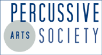
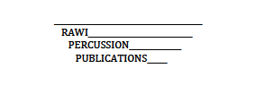
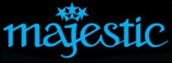

Percussive Arts Society
PAS Chapter Nederland
Michel Mordant is voorzitter van het Nederlandse Chapter van de Percussive Arts Society en medepresentator van de Day of Percussion, de Nederlandse Slagwerkdag. Communitypagina van het chapter
Het chapter
Bestuur en team
- BestuursledenMarcel van Vught, Paul Bouten en Michel Mordant
- Chair paukenBert Flas
- EnthousiastelingenHans Beurskens, Bob Martens
Day of Percussion
Alle edities
- 10e Day of Percussion — 2023, Sittard
- 2022 — overige chapteractiviteiten
- 10e Day of Percussion — 2020, Eindhoven (afgelast: corona)
- 9e Day of Percussion — 2018, Zwolle
- 8e Day of Percussion — 2015, Thorn
- 7e Day of Percussion — 2012, Den Haag
- 6e Day of Percussion — 2011, Kerkrade (PDF)
- 5e Day of Percussion — 2010, Codarts Rotterdam (PDF)
- 4e Day of Percussion — 2009, Vught (PDF)
- 3e Day of Percussion — 2008, Tilburg (PDF)
- 2e Day of Percussion — 2007, Voerendaal (PDF)
- 1e Day of Percussion — 2006, Maastricht (PDF)
22 oktober 2023 · Sittard
Day of Percussion 2023
Gepresenteerd door Percussion Friends en de Percussive Arts Society: de 10e Nederlandse Slagwerkdag, 10.00–22.00 uur, in Gemeenschapshuis Broeksittard, Dorpstraat 1, 6137 SR Sittard. Vrije toegang, met workshops van Ramon Lormans, Maikel Claessens en Georgi Tsenov; optredens van drumbands en slagwerkgroepen uit Sittard en omstreken en de Musikschule Eschweiler; afsluitend concert door Mallet Collective. Musical hosts: Fanfare St. Caecilia en Michel Mordant.

2022
Chapteractiviteiten 2022
In 2022 waren er geen chapterconcerten zoals een Day of Percussion. Het chapter was aanwezig op het World Music Contest in Kerkrade met promotiemateriaal, lidmaatschapsformulieren en ander PAS-materiaal:
- 9 juli — Percussion Contest, Theater Kerkrade
- 23–24 juli — mars- en showwedstrijden, Parkstad Limburg Stadion (Roda JC)
- 30–31 juli — mars- en showwedstrijden, Parkstad Limburg Stadion (Roda JC)
Chapterlog en rapportageformulieren 2022
Activiteiten-, bedrijfs- en financiële rapportages die voor 2022 bij PAS zijn ingediend (er werden geen aanwezige PAS-leden geregistreerd).


Aankondiging — PAS Day of Percussion 2023:

29 maart 2020 · Eindhoven
Day of Percussion 2020
De 10e Nederlandse Slagwerkdag stond gepland op 29 maart 2020, 10.00–18.00 uur, in de Fontys Sporthogeschool, Theo Koomenlaan 3, 5644 HZ Eindhoven — en werd afgelast vanwege de coronapandemie.
Geplande optredens: Alex Jacobowitz, Tatiana Koleva en het slagwerkensemble Eric Aalbers o.l.v. Paul Doom. Musical hosts: Jelle Roeper en Michel Mordant. CGN United
Sponsors



10 maart 2018 · Zwolle
Day of Percussion 2018
9e Nederlandse Slagwerkdag, 10.00–18.00 uur, bij ArtEZ, Aan de Stadsmuur 88, 8011 VD Zwolle.
Met Niek Kleinjan, Traditional Collective Drum Corps, Jan Wolfkamp, Wim de Vries en anderen, onder wie KTK en Koen Herfst. Musical hosts: Peter Berk en Michel Mordant.
Sponsors



7 maart 2015 · Ittervoort
Day of Percussion 2015
8e Nederlandse Slagwerkdag, 10.00–18.00 uur, bij Muziekcentrale Adams, Aziëstraat 17–19, Ittervoort (Thorn). Met diverse drumbands, slagwerkgroepen en ensembles. De presentatie van bladmuziek stond centraal en diverse uitgevers waren aanwezig. Musical hosts: Albert Staten en Michel Mordant.
Gesponsord door Van Vught Slagwerk, PaBo-Music en anderen.
Sponsors


6 mei 2012 · Den Haag
Day of Percussion 2012
7e Nederlandse Slagwerkdag, 10.00–17.00 uur, in het Koninklijk Conservatorium, Juliana van Stolberglaan 1, 2595 CA Den Haag.
Met Miguel Rodriguez, Slagwerkgroep Den Haag, Percossa, Davai Percussion, Ruud Wiener en slagwerkers van het Residentie Orkest. Workshops, masterclasses, demonstraties, stands, optredens van diverse ensembles en presentaties door studenten van het conservatorium — ragtimes, slagwerktrio’s, solorepertoire voor marimba, Afrikaanse workshops en meer. Musical hosts: Hans Zonderop en Michel Mordant.
Gesponsord door Van Vught Slagwerk, PaBo-Music, Van der Plas, Van Groningen en anderen.






Fotoarchief
Eerdere edities in beeld
Foto’s van de Day of Percussion 2006 en de internationale PASIC-conventie staan in het fotoarchief.